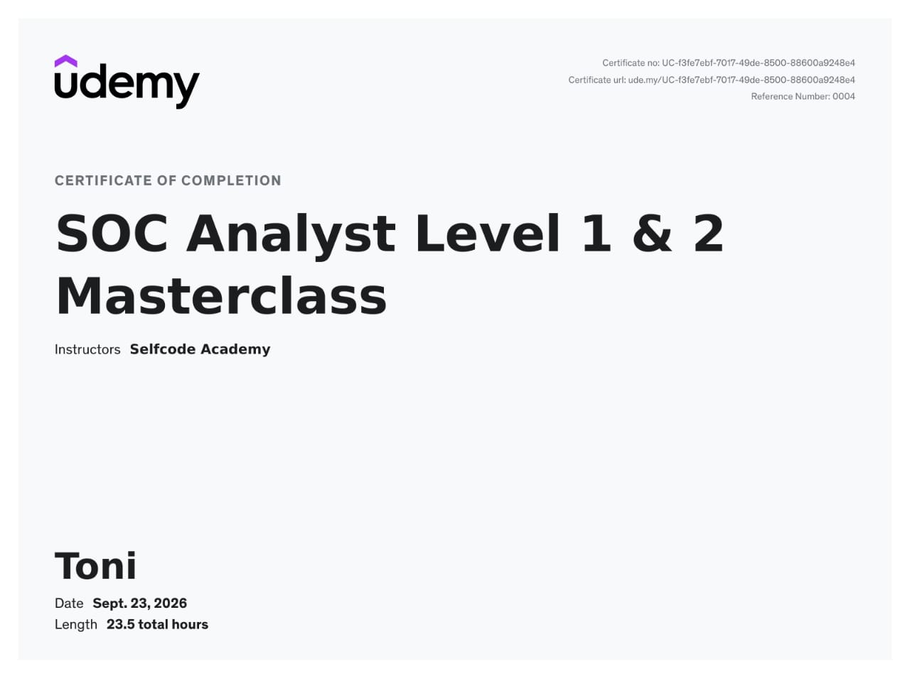
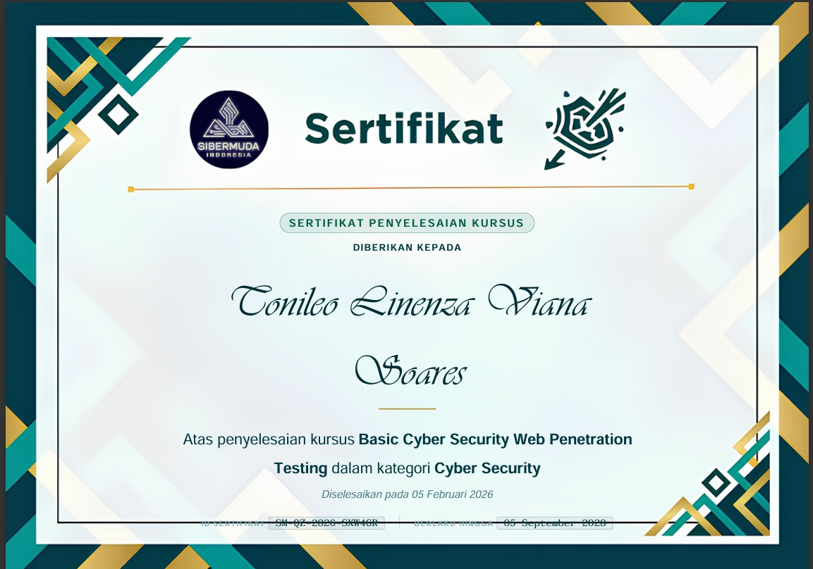

< Welcome to my space />
Halo! Hau naran Tonileo L. V. Soares bai-bain ema bolu ho naran dea, husi municipio bobonaro, graduadu iha fakuldade ICT Departamentu Teknika informatika ho predikadu cumlaude. alende ne'e hau mos hanesan Cyber researcher ne'ebe foku ba SOC|GRC|Network security. Hanesan mos Cyber Ctf player activu ne'ebe tuir ona kompetisaun capture the flag (CTF) nivel nasional no iha Indonesia. agora mos hanesan beginner bug bounty iha hackerone no hanesan top 2 leaderboard iha Plataforma tryhackme region Timor-Leste.
Halo demo ba tipo vulneravel tuir owasp top 10 iha lap juice shop nebe instala iha docker .
penetration testing ne'ebe halo tuir ona estandar Internasional hahu husi recong,scaning,exploitation,reporting, no vulneravel nebe foku ba liu owasp top 10 vulneravel.
Website portofolio pribadi dengan desain futuristik dan efek neon.
Dibangun menggunakan HTML5 murni, CSS Flexbox/Grid, dan teknik glassmorphism tanpa framework tambahan.
Sistem otentikasi pengguna dengan sistem enkripsi kata sandi yang aman.
Mengimplementasikan pencegahan SQL Injection dan hashing password yang kuat untuk keamanan data.
Hau demo oinsa mak ita uza wazuh hodi kolekta log husi agen.
siem wazuh instala iha ubuntu server hodi kolekta log husi agen hanesan kali-linux,ubntuh serve, windows no promox hodi halo monitoring real time ba agen sira no desemvolve desemvolve grafik nebe hatudu log real time husi agen ne'ebe ita monitorin uza siem wazuh.

Sertifikadu udemy Kursu Security Operation Center Level1 no Level2 ne'ebe aprende oinsa mak: analija log uza siem, hakerek report tuir estandar soc L1 no implementa sigma rule ba siem.
View Credential
Iha kursu ne'e Aprende liu ba basic penetration foka ba basic-basic idor,xss,bruteforce,patch travesar,ssrf,sql injection,open redireck,sub domaintake-over nst..
View CredentialKelulusan program intensif 10 minggu dengan penyelesaian project praktik lapangan dari nol hingga mahir.
View CredentialExperensia Servisu Profesional iha Instituisaun publico no privado.
Ministeiro terras propiadades nudar asistente IT responsavel ba koneksaun internet, sharing printer, install os, manutensaun komputador ho printer.
Profesional TrackMinisteiro Trasporte no Comunicacao, Responsablidade konfigura router foun,monitoriza rede ncp,halo invoice ba ministeiro relevante no manutensaun rede ncp.
Profesional TrackKompanha kursu Timor, responsablidade laboratorium komputador, rede starlink, documentasaun ba acividade importante sira, hanorin kursu komputador, halo editing ba vieo no imagem.
Profesional TrackInstitute Of Bussines (IOB-DILI) lori materi pakote office ba enginaria eletronika,enginaria artitekture,enginaria civil.
Profesional Trackiha pergunta no sujestaun bele kontaktu hau.